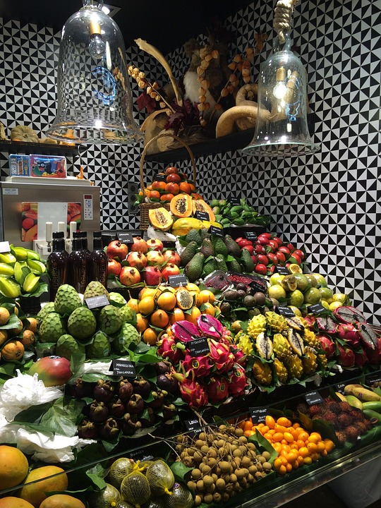
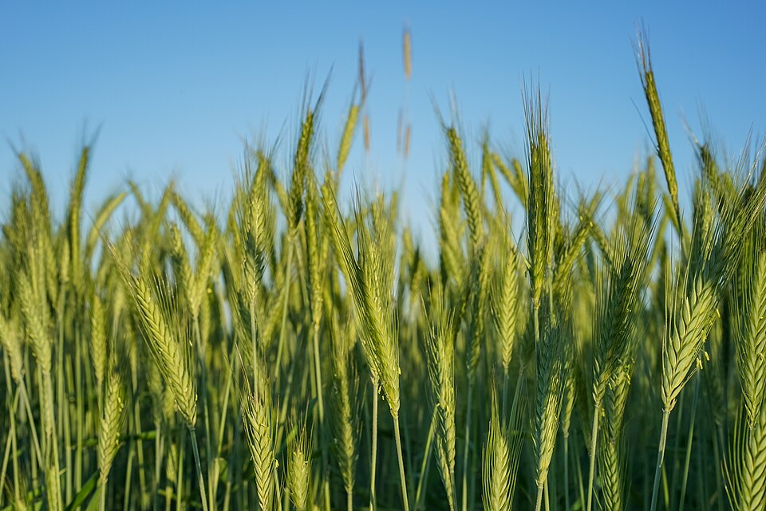

Beneficios de consumir frutas locales

Consumir frutas locales no solo es una decisión saludable, sino también una elección con impacto social, económico y ambiental. Al preferir productos cultivados cerca de tu hogar, estás eligiendo alimentos más frescos, sabrosos y sostenibles.
1. Más frescura y mejor sabor
Las frutas locales no necesitan recorrer miles de kilómetros para llegar a tu mesa. Por eso, son cosechadas en su punto óptimo de maduración, lo que se traduce en mayor sabor, aroma y textura. Además, al reducir los tiempos de transporte y almacenamiento, se conservan mejor sus propiedades nutricionales.
2. Aporte nutricional más alto
Las frutas que pasan días o semanas viajando pierden nutrientes importantes como la vitamina C o los antioxidantes. En cambio, las frutas locales, al consumirse en menor tiempo desde la cosecha, conservan sus beneficios para tu salud.
3. Apoyo a los productores locales
Comprar frutas locales significa apoyar directamente a pequeños agricultores y productores de tu comunidad. Esto no solo fortalece la economía local, sino que también ayuda a preservar tradiciones agrícolas y formas de cultivo responsables.
4. Menor huella de carbono
Transportar frutas desde otros países implica el uso de combustibles fósiles, refrigeración industrial y embalajes plásticos. Al optar por frutas locales, contribuyes a reducir el impacto ambiental de la cadena alimentaria.
5. Temporada y variedad
Consumir frutas de temporada ayuda a mantener una dieta variada y alineada con los ciclos naturales. Además, las frutas de estación suelen ser más económicas y sabrosas.
Consejo extra
Visita ferias libres, cooperativas agrícolas o huertos comunitarios. Ahí no solo encontrarás frutas frescas y locales, sino que podrás conocer a quienes las cultivan y aprender más sobre su origen.
Conclusión
Elegir frutas locales es una decisión que beneficia tu salud, tu comunidad y el planeta. En Huerto Hogar, promovemos un estilo de vida más consciente y responsable, donde lo natural y lo cercano es lo mejor.